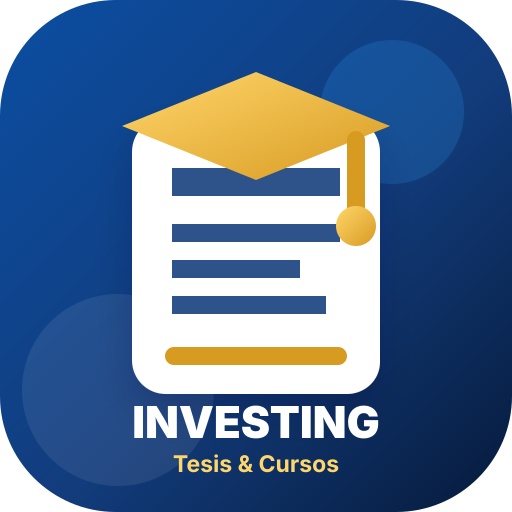

Asesoría integral de tesis
Acompañamiento metodológico para tema, matriz, marco teórico, instrumentos, resultados, discusión y sustentación.

Para egresados de cualquier universidad
En Investing Tesis & Cursos acompañamos a estudiantes y egresados de pregrado y maestría con metodología, estadística, redacción académica y preparación para sustentación.
“Invierte hoy en tu futuro académico.”
Una experiencia pensada para reducir ansiedad, mostrar progreso y activar la decisión de consulta.
Servicios diseñados para avanzar
La página comunica tranquilidad, claridad y progreso medible.
Acompañamiento metodológico para tema, matriz, marco teórico, instrumentos, resultados, discusión y sustentación.
Organización de bases, pruebas estadísticas, tablas, gráficos e interpretación académica.
Metodología, redacción académica, Excel, Power BI, estadística aplicada y herramientas de investigación.
Presentación, guion, simulacro de preguntas y seguridad para exponer ante jurado.
Neuroexperiencia académica
El estudiante necesita ver progreso, entender qué sigue y sentir que su meta está bajo control.
Revisamos universidad, reglamento, tema, fecha objetivo y nivel de avance.
Definimos entregables, cronograma y prioridades.
Trabajamos con sesiones, avances medibles y comunicación ordenada.
Revisamos coherencia, observaciones y preparación final.
Confianza antes que presión
Azul para seguridad académica, blanco para claridad cognitiva y dorado para logro. La marca debe sentirse seria, humana y cercana.
El estudiante y su familia saben qué se entrega y cuándo.
Manejo responsable de archivos e información académica.
Asesores según carrera, método y necesidad estadística.
Lenguaje claro y seguimiento por etapas.
Preguntas frecuentes
Sí. Adaptamos la asesoría al reglamento y al nivel de avance del estudiante.
Sí. Priorizamos observaciones y planteamos un plan de levantamiento ordenado.
Sí. Presentamos entregables y cronograma para generar confianza.
No. También incluye cursos, estadística, redacción académica y preparación para sustentación.
Comienza con una ruta clara
Cuéntanos tu carrera, universidad, tema, fecha objetivo y nivel de avance. Te ayudaremos a ordenar el camino.